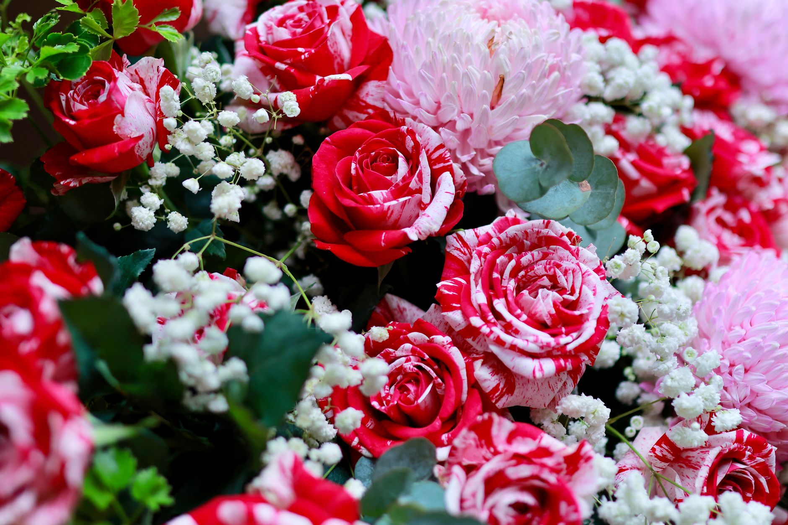
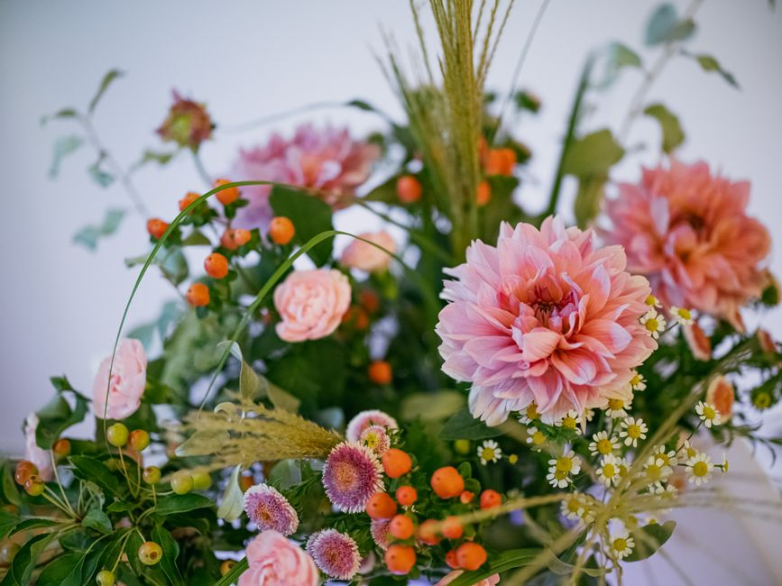
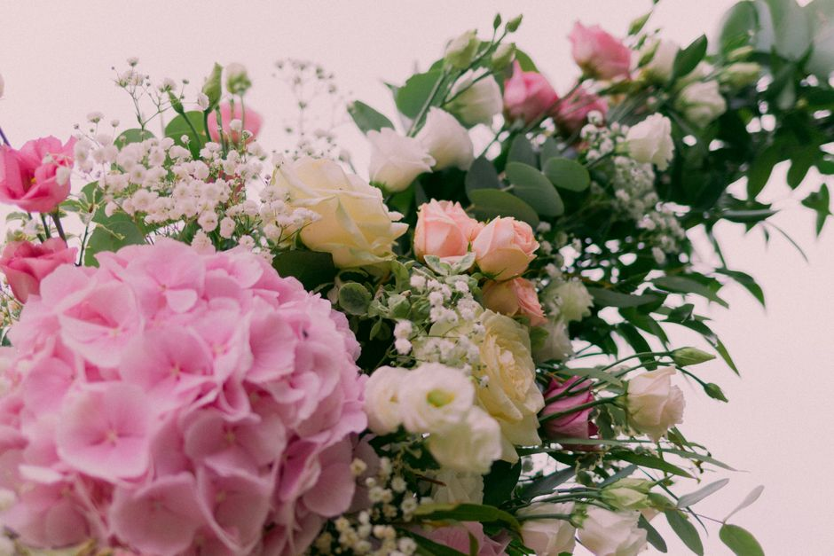
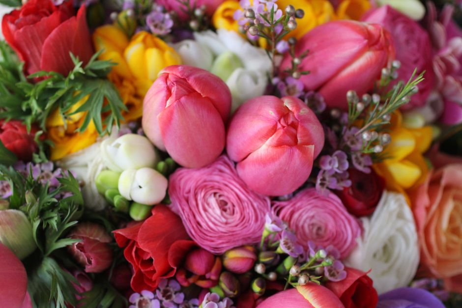
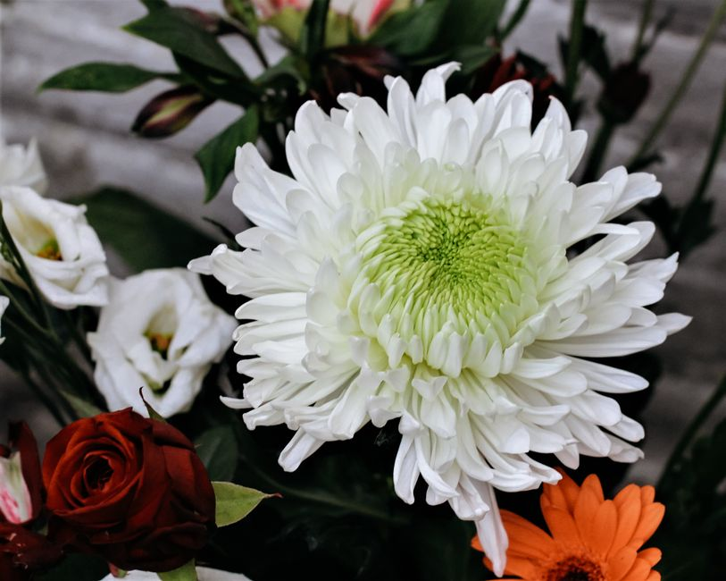
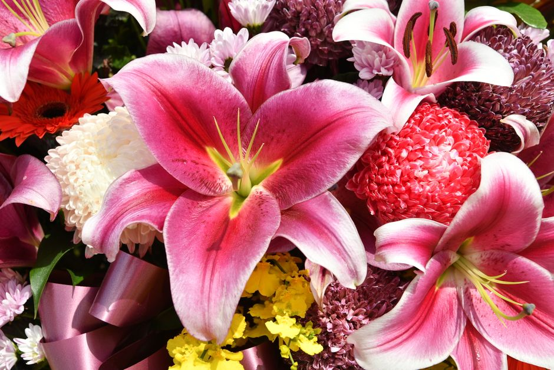
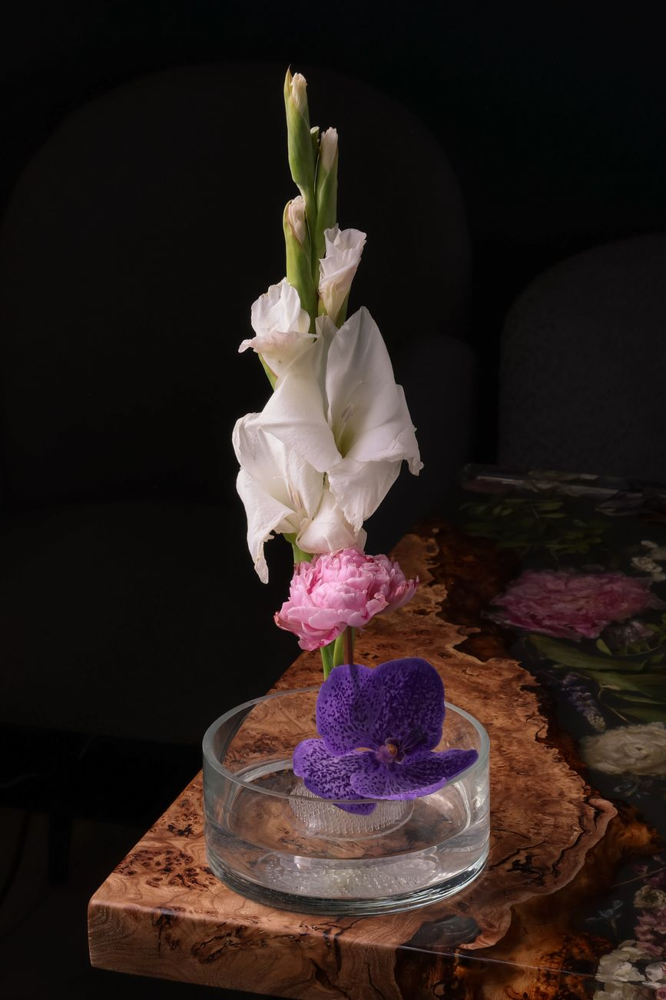

Geburtstag
Fröhliche, farbenfrohe Sträuße, die zur beschenkten Person passen, auf Wunsch mit Karte und kleiner Überraschung.
Floristik aus Kiel

Fröhliche, farbenfrohe Sträuße, die zur beschenkten Person passen, auf Wunsch mit Karte und kleiner Überraschung.
Romantische Arrangements mit Rosen, Ranunkeln oder Pfingstrosen, klassisch in Rot oder in zarten Pastelltönen.
Frühlingszwiebeln, Sommerwiese, Herbstasten oder winterliches Grün, immer aus dem, was gerade frisch am Markt ist.
Aufmunternde Sträuße für Krankenhaus oder Zuhause, in freundlichen Farben und angenehm unaufdringlichem Duft.
Zarte Gestecke und Sträuße in Rosa, Blau oder neutralen Tönen, gern kombiniert mit einem kleinen Kuscheltier.
Kränze, Trauergestecke und Sargschmuck, würdevoll gebunden und pünktlich zur Trauerfeier geliefert.
Brautstrauß, Anstecker, Autoschmuck und Tischdeko, abgestimmt in einem persönlichen Planungstermin.
Regelmäßiger Blumenschmuck für Empfang, Praxis oder Restaurant sowie Gestecke für Firmenanlässe.
Robuste Grünpflanzen und blühende Topfpflanzen mit Pflegetipp für Fensterbank und Büro.
Langlebige Sträuße und Bouquets aus getrockneten Gräsern und Blüten, die monatelang schön bleiben.
Tisch- und Schalengestecke für Feste, Jubiläen oder als dauerhafter Blickfang im Raum.
Zustellung in ganz Kiel und Umgebung, auf Wunsch mit persönlicher Grußkarte zum Wunschtermin.






Seit vielen Jahren binden wir in unserem Kieler Laden von Hand. Wir kaufen zweimal die Woche auf dem Großmarkt ein, damit die Ware wirklich frisch ist und lange hält.
Ob spontaner Gruß, Trauerkranz oder komplette Tischdeko fürs Fest: Sagen Sie uns Anlass, Farbwunsch und Budget, den Rest übernehmen wir. Beratung gibt es bei uns ohne Aufpreis.
Auf Deutsch · English · Español
An Feiertagen können die Zeiten abweichen.
Ja. Bestellungen, die bis 12 Uhr bei uns eingehen, liefern wir in Kiel in der Regel noch am selben Werktag aus. Rufen Sie kurz an, dann prüfen wir es direkt für Ihre Adresse.
Sehr gerne. Nennen Sie uns Lieblingsfarben, Anlass und Preisrahmen. Wir binden individuell und schicken Ihnen auf Wunsch vorab ein Foto per WhatsApp, bevor der Strauß rausgeht.
Ja, beides gehört zu unseren Schwerpunkten. Für Trauerfloristik sind wir kurzfristig da, für Hochzeiten planen wir in einem persönlichen Termin Brautstrauß, Anstecker und Tischschmuck.
Ein Anruf genügt und wir kümmern uns um den Rest. Beratung, Bindung und Lieferung aus einer Hand.